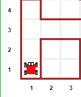
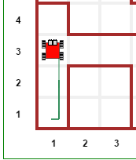

By now, you should have understood the code use to illustrate the basic commands known in Reeborg’s World. In this section, I will introduce a few more Python keywords and functions, mostly by showing some brief examples.
Suppose we Reeborg needs to find its way out of a maze… Actually, let’s show it in action in one example.

This is going too fast for you to see exactly what’s going on. If you want to load the maze so that you can try things out, you need to make sure you have the Documentation menu loaded and select “Big maze”; it will then be up to you to write the code. I explain how to do so below.
We know that Reeborg can move() and turn_left(). We also know that we can define a turn_right() instruction. These three instructions are enough to follow a twisting path in a maze to find the exit.
The problem is knowing which path to follow…
We want to have Reeborg decide on its own which path to follow. We know that Reeborg can determine if it can move forward safely, by using front_is_clear(), and that it can determine if the path to its right is clear, using right_is_clear().
There are three types of situation that Reeborg could find itself in. First, both the path in front, and the path to its right could be blocked by walls.

In this case, the only sensible thing for Reeborg to do would be to turn left. In Python code, we could write this as:
if not front_is_clear() and not right_is_clear():
turn_left()
Here, I have used the Python keyword and to indicate that both conditions were required. I can perhaps make the logic easier to see using parentheses to group together some terms:
if (not front_is_clear()) and (not right_is_clear()):
turn_left()
Second, Reeborg could find that the path to its right is blocked, but not the path forward.

Here, the sensible thing would be to move forward; the option of turning left (again) would simply make it spin on the spot:
if (front_is_clear()) and (not right_is_clear()):
move()
Third, Reeborg could find that the path to its right is clear:

In this case, Reeborg should take advantage of this opportunity to turn right, which it couldn’t do in the previous cases, and to take a step in that direction:
if right_is_clear():
turn_right()
move()
By adopting this strategy, Reeborg would end up doing its best to move forward while keeping a wall immediately to its right. So, we could encode these three steps into a single function as follows:
def follow_right_wall():
if (not front_is_clear()) and (not right_is_clear()):
turn_left()
if (front_is_clear()) and (not right_is_clear()):
move()
if right_is_clear():
turn_right()
move()
Once this function is defined, as well as turn_right(), all that is needed for Reeborg to exit the maze is the following:
while not at_goal():
follow_right_wall()
Try it out!
Before reading further, try the above. You should be able to confirm that it works.
The above strategy relied on three mutually exclusive cases. In the first two, the right path was blocked, which was not the case for the third case. What distinguished the first and second cases was whether or not the front path was free of obstacles. This can be understood by carefully reading of the code … but there is a better way.
Python includes two keywords, elif and else to complement an if statement and indicate cases that should be considered as mutually exclusive; by this, we mean that Python will execute the first code block (and only that one) for which the stated condition is satisfied. Since else does not have any condition attached, if other conditions have not been met, then the code there is always executed; otherwise, it is skipped over. Here’s how we can rewrite follow_right_wall() using these keywords:
def follow_right_wall():
if right_is_clear():
turn_right()
move()
elif front_is_clear():
move()
else:
turn_left()
Much simpler to read and to understand, once you know that only one of these choices is going to be executed.
By the way, this kind of construct always include only one if clause, it can include any number (from zero to whatever) of elif clauses, and include zero or one else clause.
If we have two conditions:
if condition_1 or condition_2:
do_something()
the if clause will be executed, as long as one of the two conditions is equivalent to True; when using and, we needed both conditions to be equivalent to True. For example:

break allows to “get out” of a loop (either a for loop or a while loop) and continue code execution with the code that comes after the loop.
continue stops execution within a loop, and goes back to the beginning of the loop.
Here are two examples, one for each keyword.


not, and, and or are known as logical keywords, used with the boolean keywords True and False or their equivalent.
for (together with in), while, if, elif, else, break, and continue are often referred to as control flow keywords as they “control the flow” of execution of the code, determining if some parts of the code need to be repeated or skipped.
Sometimes, you want to write a program that will have multiple if/elif/else clauses or some function which you have not yet defined, etc., but you’d like to test part of it to see if it works as expected. You may then find the keyword pass to be useful. This keyword tells Python to do … nothing. How is that useful you ask? Here’s a bit of a contrived example:
def follow_right_wall():
if right_is_clear():
pass # need to figure out what to do here
elif front_is_clear():
move()
else:
turn_left()
Using pass above allows us to write the code with the proper indentation, so that it can be run without any syntax errors. There are other potential uses of this keyword, but this should give you a good idea of its common use.